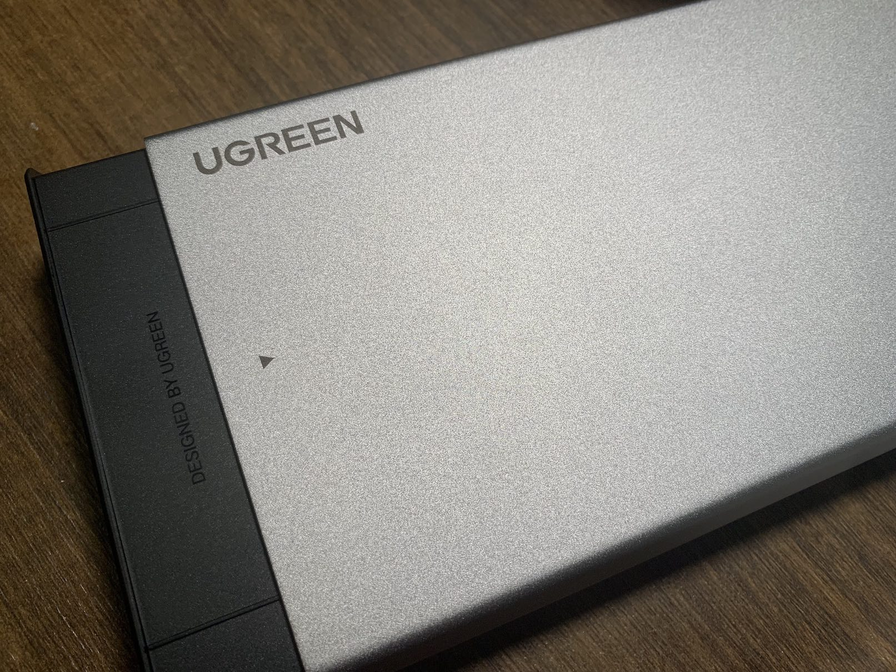
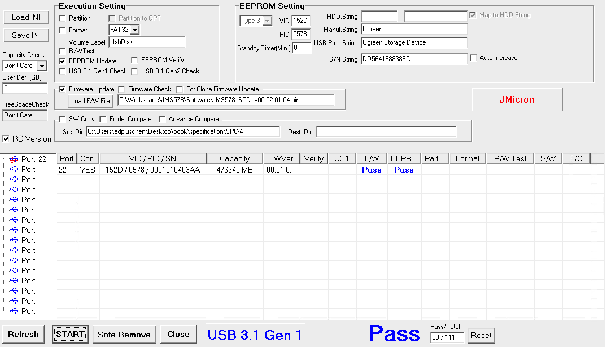

[Episode 2] IO ERROR, ERROR and ERRORS
As Qbittorrent downloads more and more contents, IO error tends to be more frequent. Initially thought it was just the error on LSI or something else, nothing relavant, as everything seems to be fine after resume the process. So one day, the system suddenly failed to recognize the corresponding drive. Then I got. like 60+ IO errors.
Considering this could be the second time. At that moment I nearly got frozen. Damn. I SWEAR that I would never try to save bucks on my storage devices.
On the one hand, I recently have had this urge to purchase a new laptop, but not sure if I should choose 4050 or 4060. Naturally on that night, the answer came. let it be 4050 and the remaining money could be used to buy disks.
This time I went HC320, which should be arrived by tomorrow, will add some pics.
Then, another difficulty. A hard drive bay. ORICO has been notorious, so definitely no. But what are the differences between those models? There are so many of them. I spent hours and it really made me headache. So there’re mainly two brand, JMS and ASM, and the tech behind designs and manufacturing should be pretty mature. Then comes the problem: Some brands uses components with lower quality, and many models somes with 2A power supply, which is not enough for enterprise level disks. The latter one is relatively easy to handle, just buy 12V 3A supply from trusted ones, like MEAN WELL. But the former, collecting and analyzing information are really painful. Practical info are limited in Tieba, but also the availability is time limited, the overall quality of the product will not be the same all the time. Like MAIWO, it used to be the enthusiasts’ choice, but the QA grow worse; as for ULIKE, it was fine, until recently it degraded 5V chip and circuit peripheral designs, so no. It was the most surprising that, Ugreen, a brand I hated and in my impression is close to ORICO, provides fair products.
Double check my conclusions, I purchased CM588. To be honest, the quality is really good, heavy metal which helps to cool faster, worth the extra cost comparing with plastic model.

And the next, is about hibenation strategy. Unlike mount in chasis, if auto hibernation is enabled, constant start-ups and turning off rises great current, which, after multiple times, cause damage to the disk. Unless that the drive is used as the cold spare. So according to my usage, I’ll need to get rid of that limitation.
The controller of this model is JMS578, though I previouly confirmed that with the support, the tech support asked me to show hardware id to double check. I get it, it makes sense, not all customers would remember what they’ve bought. It’s just, to let the bay to be recognized in the system, a drive must be inserted. This is not good. Glad that I have a spare 2.5inch drive that fits, otherwise I wouldn’t use the HC320 to do this.
According to the tutorials, it is weird that flash hardware still require a drive inside. As this is the first time, it did cause me concerns. But it turns out to be fine, guees it’s the price of the extra protection.
The provided software is just like regular EEPROM flash program, so the steps are really simple, not like early years, you have to short-wire some of the pins on the chip, yikes.

Press start, if everythings correct, the F/W and EEPROM should have two green PASS. That’s all I can do today.
[Episode 1] DO NOT FORGET ABOUT 3-2-1 RULE.
Obviously, I didn’t, so… I lost almost all previous data in the last three years about my past courses. Though, for those I needed frequently to check, I got backups on my own laptop, so things aren’t that bad..
And I have been quite a while for me to use the raid card.
In a nutshell, I think I’ve found what is the real criminal after all those data loss. THAT IS THE RAID CARD!!! To be unpartially, indeed, my drives are all cheap retired disks from servers, which, they are more likely to encouter problems. But the error rate is unusual and extremely unstable, even if I swapped a newer drive.
Well, I know I’d better to check this everyday for at least two or three weeks to make sure that it is really working correctly right now. I want no longer suffer such data loss. It’s terrible.
And in the future, I plan to expand the NAS, though the detailed scheme is not decided yet. Because there’re just too many things to bother right now.
And I haven’t tell my stories yet.